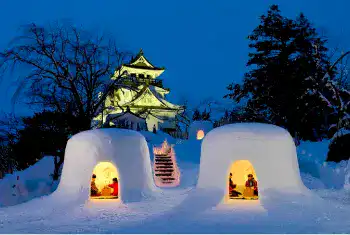

観る・体験する
四季折々の美しい風景と、秋田ならではの文化・歴史が息づくスポットがたくさん。ここでは、秋田の魅力を肌で感じられる観光スポットや体験アクティビティをご紹介します。
黒川のイチョウ並木（横手市）
紅葉シーズンには約70本の黄金色に輝くイチョウが約300mのまっすぐな一本道の両脇に立ち並びます。 落葉が進んだ黄色の絨毯の上を散策するのもおすすめです。
秋扇湖（しゅうせんこ）
国道341号線に沿って広がるダム湖。ダム公園から爽快な景色が楽しめるほか、上流部の新玉川大橋から水の多い時期には水没林を、水の少ない時期には湿原のような景色を見ることができます。コバルトブルーの水面に紅葉が映え渡る、秋の景色も見ものです。
角館の武家屋敷
江戸時代の城下町の街並みが今なお残り、「みちのくの小京都」とも呼ばれる角館。和の風情を味わえる秋田県内屈指の人気観光スポットで、日本人だけでなく外国人観光客も多く訪れます。また、国の伝統的建造物群保存地区され、文化財としても高い評価を受けています。
なまはげ館・男鹿真山伝承館
150体以上のナマハゲ面の展示やナマハゲの実演を体験できる施設。 ユネスコ無形文化遺産に登録され、国重要無形民俗文化財に指定されている「男鹿のナマハゲ」。 なまはげ館では、お面や衣装の展示、大型スクリーンによる映画の上映などを行っています。150体以上のナマハゲが集う展示ホール「なまはげ勢揃いコーナー」は、迫力満点です。
秋田犬ステーション
秋田駅からほど近い「エリアなかいち」にある秋田犬とのふれあい施設。毎週土日に、秋田犬に会うことができます。犬へのストレスを考慮して触れることはNGとなっていますが、写真撮影はOK。施設内ではオリジナルグッズを購入することもできます。
八幡平ドラゴンアイ（鏡沼）
八幡平にある「鏡沼」で、沼を覆う雪と雪解け水が織りなす、龍の眼のような神秘的な景観。「鏡沼」は、噴火によって生じた火口に水が溜まってできた火口湖です。静かに湖水をたたえ、まわりの美しい風景を写す姿を鏡にたとえて、この名がつけられました。 5月下旬から6月上旬頃にかけて“運が良ければ現れる”ドラゴンアイは、八幡平の新名所として注目を集めています。
きみまち阪県立自然公園
秋田県の北部に位置する能代市二ツ井町にある県立自然公園。とりわけ春のサクラ、秋の紅葉が見もので、シーズン中は多くの人出で賑わいます。かつて、この地を訪れた明治天皇と皇后のロマンチックなエピソードが残されていることから、恋のパワースポットとしても親しまれています。
森吉山・阿仁ゴンドラ
「花の百名山」、「樹氷鑑賞スポット」として知られる森吉山の山頂付近（標高1,167m）まで、雄大な景色を楽しみながら片道20分で移動できます。乗車定員は6名。森吉山登山の移動手段としてもご利用いただけます。

蒸ノ湯温泉 ふけの湯
八幡平の標高約1,100mに位置する、八幡平温泉郷一古い老舗温泉。源泉を2種類と地熱浴のオンドルもあり、子宝の湯で有名な森林浴のメッカとも言われています。野天風呂混浴場では枡風呂、樽風呂、岩風呂の3種類の浴槽が並び、外では経験できない360°の大パノラマが楽しめます。春は新緑、夏は満天の星空、秋は錦しゅうを楽しめ、料理も豊富な山菜と川魚を使った創作の深山薬膳料理を提供しています。

横手のかまくら
およそ450年の伝統を誇る小正月行事。水神様をまつった室（かまくら）の中で、子どもたちが火鉢で餅を焼いたり、道行く人に甘酒を振る舞ったりします。日が落ちるとかまくら内の明かりが闇にこぼれ、より一層幻想的な雰囲気が広がります。
旭川ダム公園
秋田市仁別にある旭川ダムの近くに整備された公園。遊歩道に沿って、ヤマモミジが植えられています。旭川ダムの堤頂からは、太平山の紅葉を見ることもできます。例年10月末〜11月ころまでがヤマモミジの紅葉の見頃です。
犬っこまつり
米の粉で作った犬の像を、家々の戸口などに飾る民俗行事。メイン会場には、雪で作られた犬の像やお堂が立ち並びます。日が落ちると雪のお堂にローソクがともり、辺りは幻想的な雰囲気に。祭りの期間中には、愛犬祈願祭も行われます。